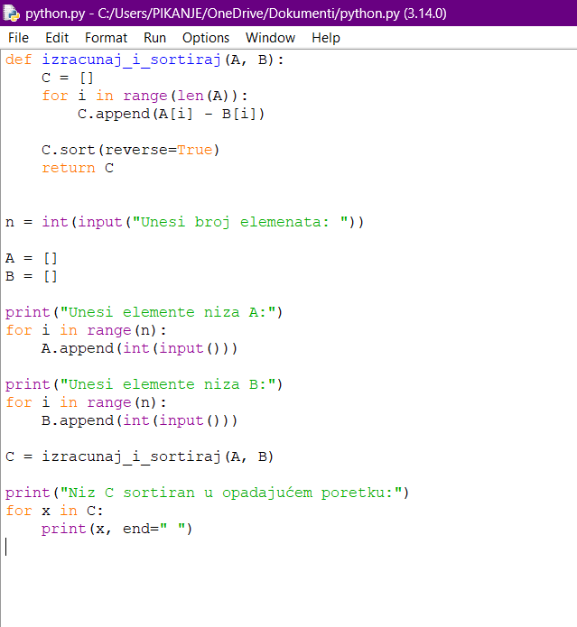
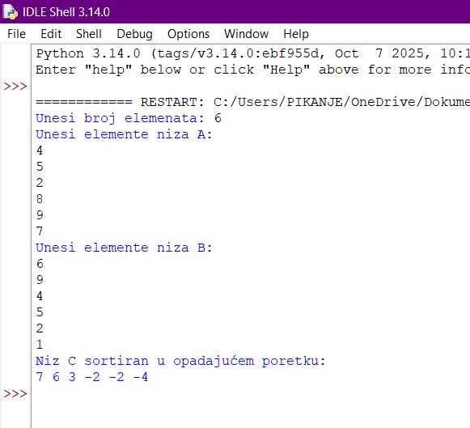

Natalija Ljubović
Broj indeksa: 506/2025
- Datum i mesto rođenja: 31.12.2006., Kragujevac
- Prethodno školovanje: Druga kragujevačka gimnazija
- E-mail: nakii.kg@gmail.com
- Hobi: Enigma, KGG, Extreme gaming
- Nacrtati algoritam i napisati funkciju koji će izračunati niz C(n), čiji će se članovi dobijati
kao razlika odgovarajućih članova niza A(n) i niza B(n) (C i =A i -B i ). Tako dobijeni niz
C(n), sortirati u opadajućem poretku. Napisati i glavni program koji će učitati nizove
A(n) i B(n), pozvati funkciju i štampati niz C(n).
Python zadatak

